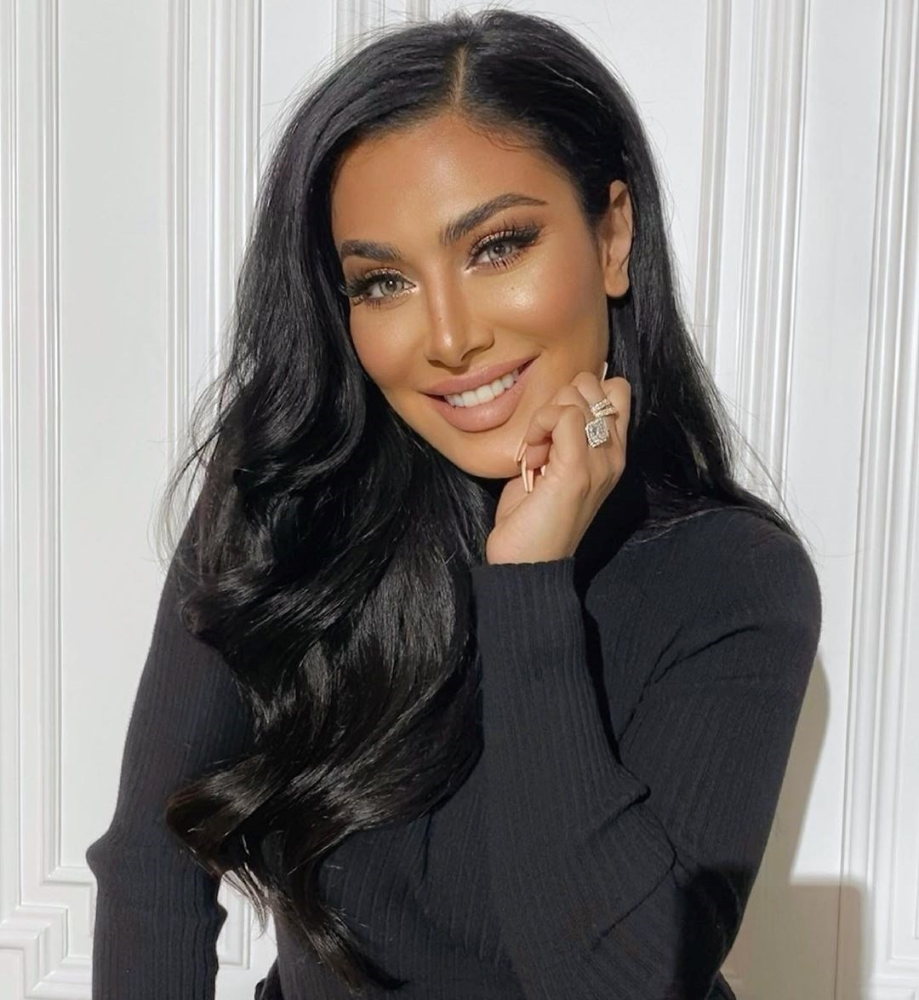

- 1.4 Million Followers
- Digital marketing agency
- Targets everyone
- Tim Karsliyev
- Claims can reach over 200 million people
- 29 Million followers
- Makeup blogger with howtos
- Has her own makeup line
- Very relatable to a younger audience
- 21 Million Instagram followers
- Music related content
- Gained show on netflix, chasing cameron.
- Personal trainer
- 10.5 million instagram followers
- Top 30 most influential people on the internet

Cooking with Mima
- Food based content
- 2.4 million followers
- Targets everyone
- Recipes and focus on health content
- 144 Million Followers
- Singer
- Uses social media to promote charitable causes.
- Huge fanbase constantly interacting with
- 118.5 million followers
- Modeling, socialite, makeup empire
- Soccer star
- Largest - 145.4 million followers
- 750,000 per sponsored post